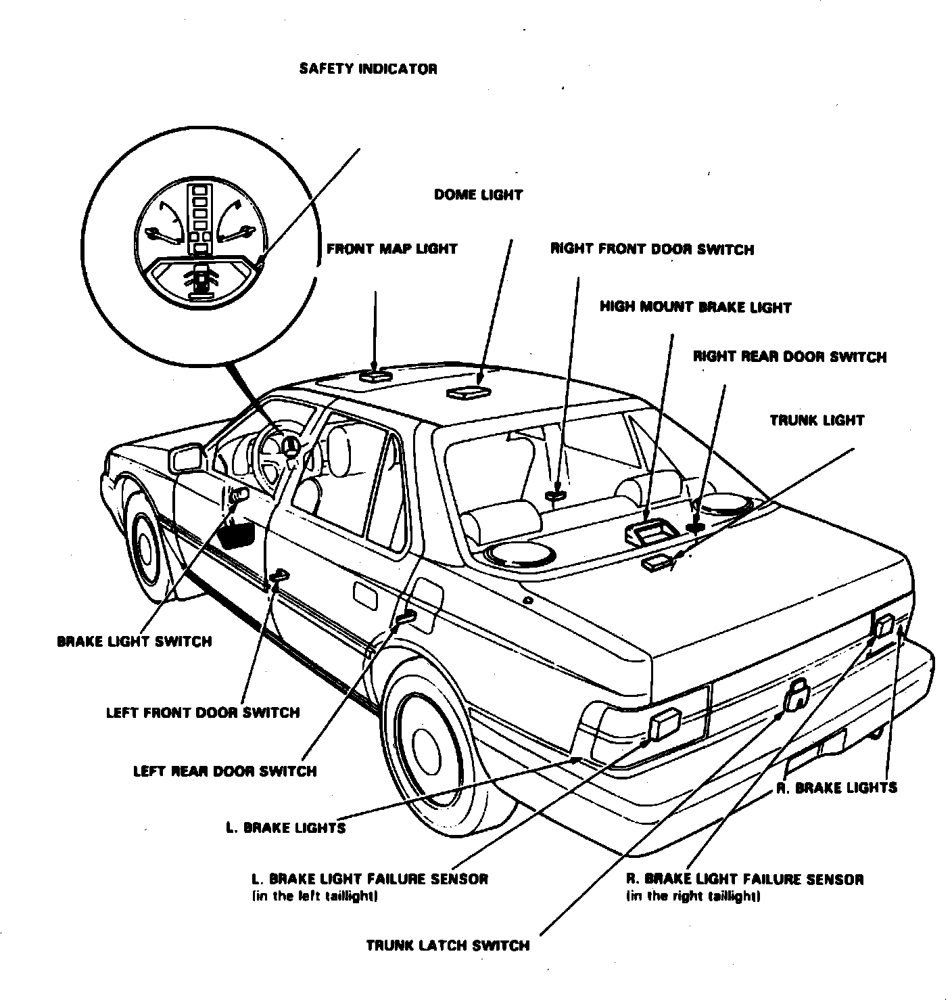

Operation CHARM
: Car repair manuals for everyone.
Home
>>
Acura
>>
1988
>>
Legend Coupe V6-2675cc 2.7L SOHC FI
>>
Repair and Diagnosis
>>
Instrument Panel, Gauges and Warning Indicators
>>
Lamp Out Indicator
>>
Lamp Out Sensor
>>
Locations
>>
Left
Left
Warning Indicators Components.:

In LH taillights
Applicable to: 1988 Legend